飞鸽
Flying Pigeon
飞鸽品牌年轻化项目围绕年轻用户的骑行兴趣与选车门槛，重新规划品牌的数字化服务。方案将个性化定制、骑行记录和社区内容整合进同一款 App，使购车前的选择、购车后的使用与骑友交流形成连续体验。
01 / 06
项目背景：老字号自行车品牌的年轻化转型
飞鸽是中华老字号，并生产了新中国第一辆自行车。品牌长期以经济、可靠和通勤属性为主要认知，但这套定位较难承接年轻用户对兴趣骑行、个性表达与数字化服务的需求。
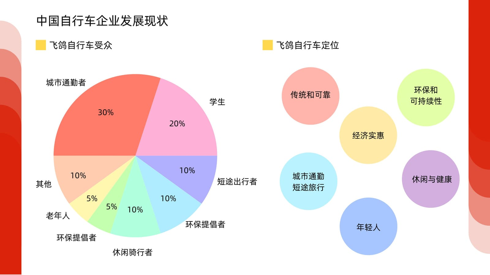
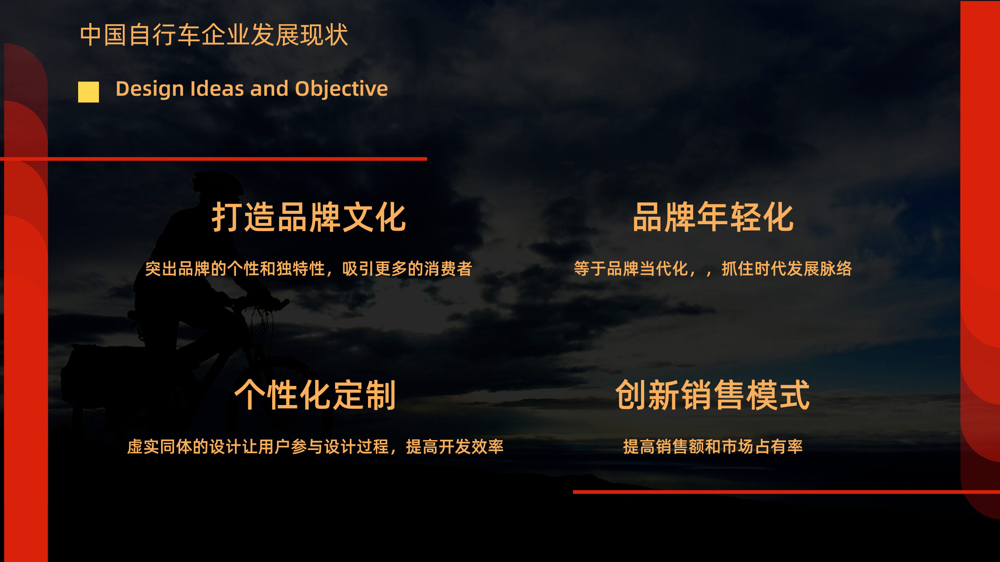
02 / 06
用户研究：兴趣消费与选车门槛并存
调研显示，健身、减压和亲近自然是年轻用户参与骑行的重要动机。入门用户希望得到清晰的选车指导，避免被复杂参数阻碍；有经验的骑行者则更关注性能定制、骑行数据和稳定的交流社区。
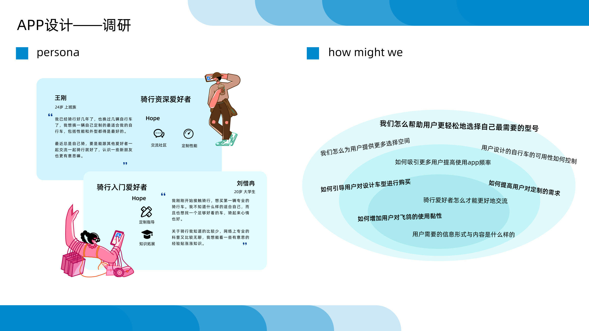
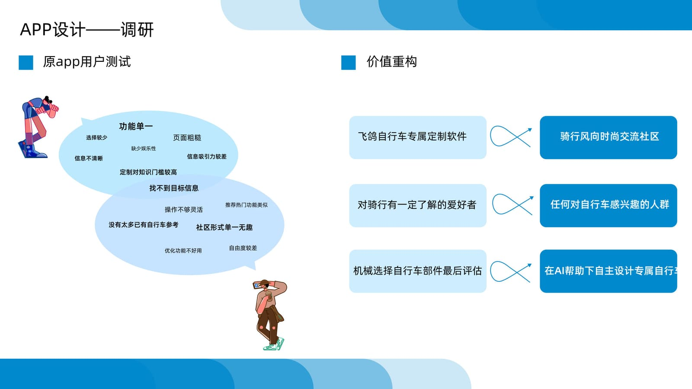
03 / 06
竞品分析：品牌、定制工具与骑行 App 的功能断层
分析分为三个层级：国货与专业自行车品牌用于判断品牌定位，自行车定制工具用于比较选车与配置能力，骑行 App 用于研究运动记录、路线和社区功能。
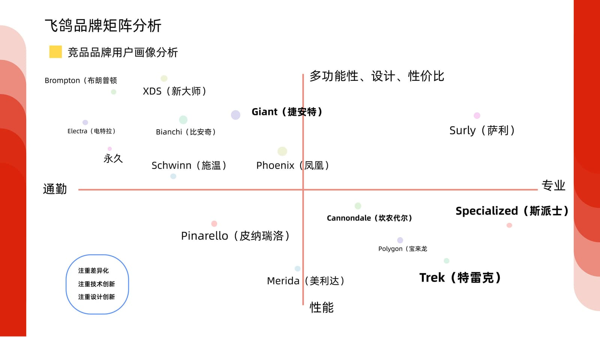
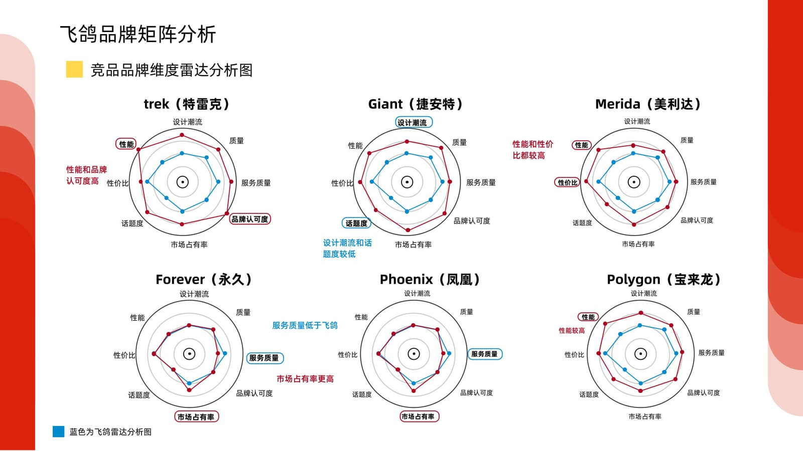
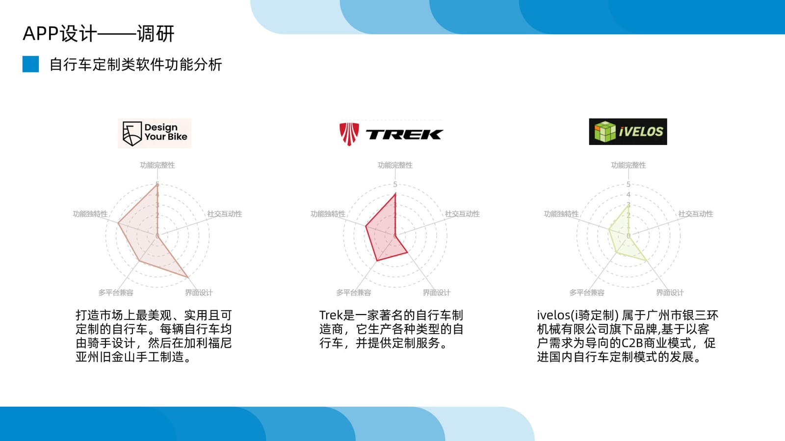
04 / 06
产品策略：从单一定制工具扩展为骑行服务平台
根据用户与竞品研究，产品定位从面向专业用户的专属定制工具，调整为同时服务入门与进阶骑行者的平台。定制负责降低选车门槛，运动记录和社区内容承接购车后的持续使用。
飞鸽自行车专属定制软件
整合定制、骑行与社区的服务平台
对骑行有一定了解的爱好者
同时覆盖入门与进阶骑行者
按零部件逐项选择并在最后评估
由 AI 根据需求提供整车建议，再进行个性化调整
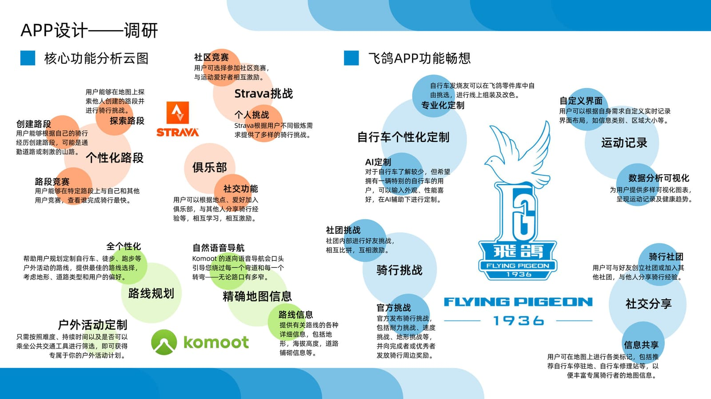
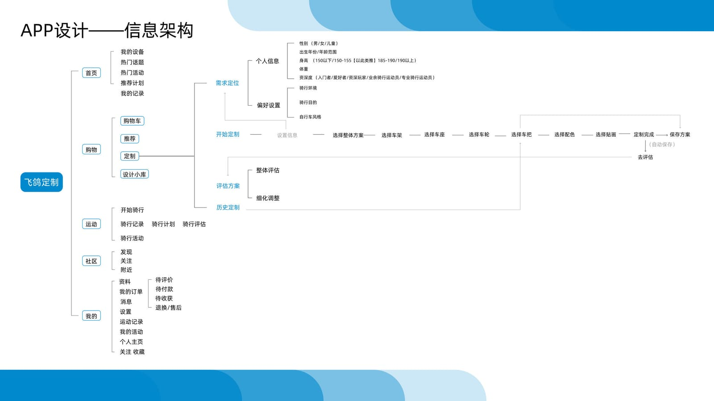
05 / 06
原型验证：定制流程是主要阻塞点
低保真测试设置了参加骑行活动、加入社区和定制自行车三项任务。活动与社区路径可以较快完成，用户的主要困难集中在定制入口、车型判断和零部件选择。
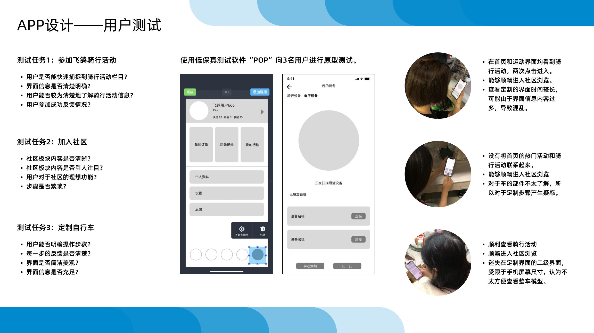
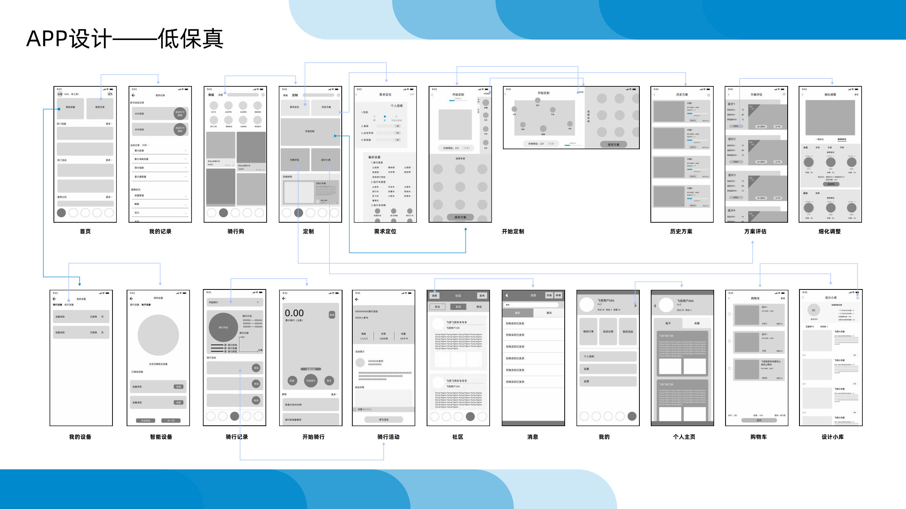
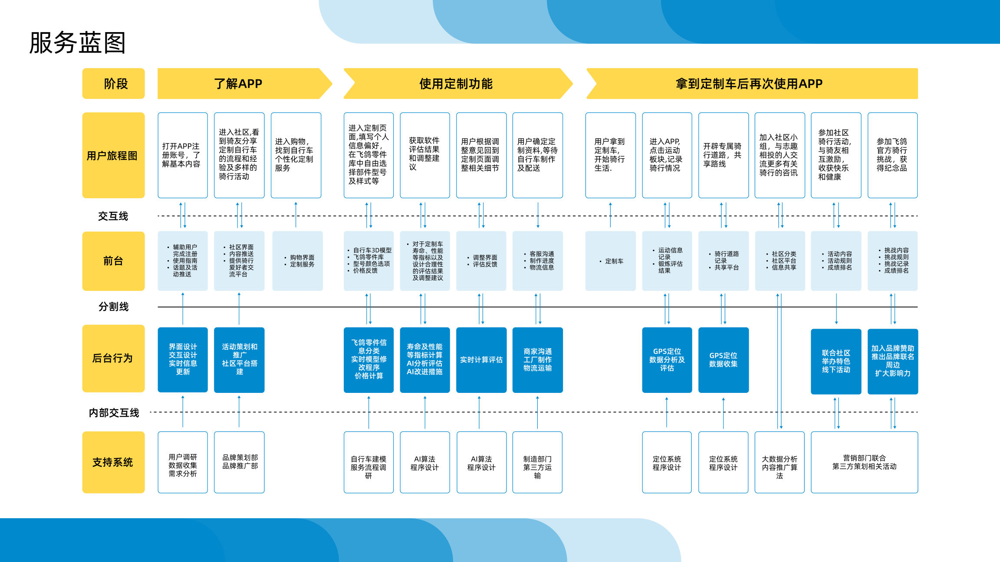
06 / 06
最终方案：连接选车、骑行与社区
高保真方案将内容发现、个性化定制、骑行记录和社区分享整合进统一界面。用户可以从了解车型和生成配置开始，在购车后继续使用设备连接、运动数据与社区功能。


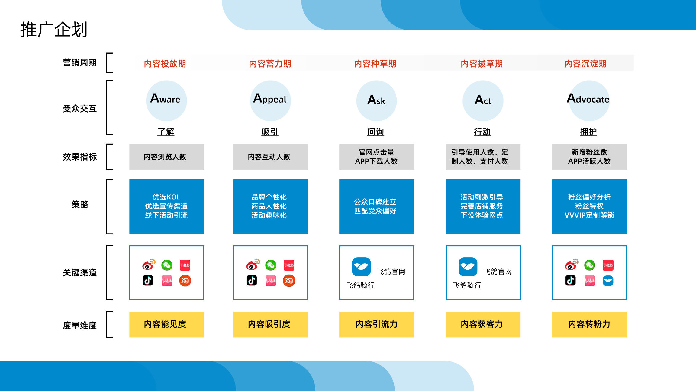